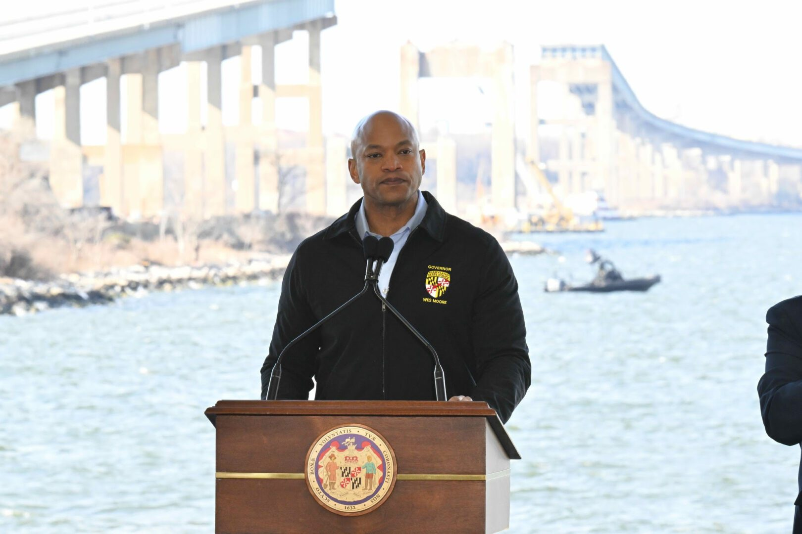

Following the one-year anniversary of the bridges collapse, loved ones of the victims, witnesses of the disaster and Marylanders alike still carry questions.
Following the one-year anniversary of the bridges collapse, loved ones of the victims, witnesses of the disaster and Marylanders alike still carry questions.
Originally published March 26, 2025
Damon Davis was walking to his car, parked on the south end of the Francis Scott Key Bridge in Baltimore, when he felt the roadway shake.
It was the middle of the night one year ago Wednesday and Davis, a construction inspector overseeing a seven-man road repair crew, could see nothing but darkness across the Patapsco River. But he heard a thunderous crunch, he would later tell investigators, so he ran.
Behind him, the sprawling bridge was falling - plunging his car and the work crew 185 feet into the icy waters below.
Davis reached for his cellphone, he said, the one that Maryland officials were supposed to call in case of an emergency. But it never rang. Not at 1:27 a.m., about two minutes before the bridge collapsed, when a 984-foot cargo ship called the Dali issued a mayday call that the vessel had lost power. Not moments later, when Maryland Transportation Authority officials told police to stop all traffic crossing the span as the Dali drifted toward one of the bridge's support pillars. Not when those officers realized there was a work crew still on the bridge.
One year later, it's still not clear why the men working on the Key Bridge that night were never warned - and what, if anything, has changed to prevent a tragedy like this one, which killed six of the workers and left the two survivors reeling.
Amid a flurry of ongoing lawsuits, Gov. Wes Moore (D) and Maryland Transportation Authority officials have said the Key Bridge collapse was the "sole fault" of the owner and the operator of the Dali cargo ship, Grace Ocean Private Limited and Synergy Marine Group.
But a Washington Post review of thousands of pages of documents related to the Key Bridge tragedy found that lenient safety requirements and lax state oversight - which spanned the administrations of at least six governors - made the bridge and the men working on it less safe.
A safety plan assembled by the private contractor that employed the work crew and approved by Maryland officials banned cellphone usage on the jobsite, records show, but did not lay out how to reach workers in case of an emergency. The crew had no radios, walkie-talkies or direct lines to state officials. All communications to them came from Davis.
Still coping with the trauma of the collapse, Davis declined to be interviewed for this story through his attorneys, who said their client has "more questions than answers" about that night.
The increased scrutiny on Maryland officials comes as the National Transportation Safety Board concluded last week that the state could have mitigated the Key Bridge's vulnerability to ship strikes but did not - despite recommendations to study the risk in 1991 and again in 2009.
Moore's office declined to address questions about the state's responsibility in the collapse, citing ongoing litigation. A spokesperson, Carter Elliott, said the governor had "made it his mission to ensure those families found closure, and that they were protected following the loss of their loved ones."
The men would still be alive today and the bridge still standing if not for "the reckless operation" of the Dali, Elliott said, whose crew "never blew the ship's horn to alert people on the bridge, including the workers, that the Dali was out of control."
As the state commemorates what could become the most expensive maritime disaster in modern history, victims of the tragedy say they, too, hold the Dali responsible. But they also want change.
"Someone should have said: 'Run, there's an emergency, run.' They could have called right away," said María del Carmen Castellón, whose husband, Miguel Luna, was one of the six men who died in the collapse. "Maybe if there had been more rigor, our family members would still be with us."
Twenty years before the collapse, one of Maryland's key maritime safety committees discussed the need for clear communication protocols in case a ship "dangerously veered" toward the Bay and Key bridges.
One member asked if there was a hotline available to quickly stop traffic, according to a Post review of minutes of that 2004 meeting held by the Baltimore Harbor Safety and Coordination Committee. For the next six years, that member, a veteran ship captain and representative of the Association of Maryland Pilots, repeated his concern over emergency communication protocols, the minutes show.
In December 2023, a different committee member warned again that the body should consider how crews would communicate in an emergency involving "the loss of steering or propulsion of a ship approaching the Bay Bridge or Key Bridge." His concerns, he said, were "due to the unreliability of reaching someone in the current protocol."
In 2002, Maryland government officials became concerned with attacks on transportation infrastructure after the attacks on the World Trade Center and threats targeting the Golden Gate bridge in 2001.
Three months later, the Dali was on its way to proving those worries were well-founded.
At around 1:25 a.m. that March night, the vessel lost power when it was about three ship lengths from the bridge, according to NTSB's preliminary report on the collapse. The power returned briefly, then blacked out again.
At 1:27 a.m., ship personnel called the duty officer for the MDTA police.
Mayday.
At about 1:28 a.m., the duty officer ordered two policemen near the bridge to block all traffic. "Is there a crew working on the bridge right now?" he asked them by radio. "You might want to notify whoever the foreman is. See if we can get them off the bridge temporarily."
One officer, a 13-year veteran, said he would drive on the bridge to "go grab the workers" once backup arrived.
Ten seconds later, at about 1:29 a.m., a second officer spoke into the radio: "Start, start, whoever, everybody," he said. "The whole bridge just collapsed."
At the same time, Davis, who had made it to safety, was frantically calling the work crew's on-site foreman. But he hung up when he realized he and the others had already disappeared into the water.
"I didn't know what was going on," Davis would later recount to investigators. "I didn't know what had happened."
Davis said he found law enforcement waiting and dive teams suited up when he reached solid ground. He guided them toward the approximate location of the seven construction crew members when they went down.
About 25 minutes after the collapse, a MDTA police boat found one of those men, Julio Cervantes Suarez, who had escaped his truck after it fell into the water by manually rolling down the window and climbing out. He scaled a slab of concrete, he said in a TV interview, and looked for his crew.
"I started to call out to each one of them by name," said Cervantes Suarez, then 37, who suffered a cracked chest plate. "But no one answered me."
In the weeks that followed, dive crews searched in cold, murky waters to recover the bodies of the other six men. The Port of Baltimore was shuttered for months. The FBI opened a criminal investigation. National transportation safety investigators announced that the vessel had also experienced two electrical blackouts the day before it toppled the Key Bridge.
The tragedy launched Moore into the national spotlight, where in near daily public appearances he said his state was "Maryland Tough" and "Baltimore Strong." Again and again, he praised the police officers for saving lives by stopping traffic and emphasized his promise to take care of the survivors and their families. He said safety was "paramount."
At the six-month anniversary of the collapse, the state of Maryland joined dozens of others in suing the Dali's owner and operator - alleging they knowingly allowed a dangerously unseaworthy vessel into U.S. waters.
"The six victims of the collapse should all be here right now," Moore said at the time. "That's why accountability matters."
What wasn't clear, though, was whether the state would hold itself accountable, too.
Since Luna's death, Castellón said, she has not been able to shake the questions about how such a tragedy could have been avoided - and how a similar event could be prevented in the future.
Castellón has called on government officials and construction companies to implement stronger labor protections on jobsites. She has joined a lawsuit against the ship's owner and operator. And she has pushed for undocumented immigrants to be given legal permission to remain in the United States, so they don't have to resort to working for employers who skirt safety requirements.
"We often do these hard jobs because we don't have another option," Castellón said, sitting at a picnic table near the pink-and-white food truck she has continued to operate.
In the aftermath of the tragedy, both Moore and President Joe Biden personally assured Castellón that her husband would not be forgotten. Officials quietly pushed to alter her immigration status, securing humanitarian parole protections for her. Hundreds of strangers donated funds to support her and the other victims' families.
The money paid for Luna's funeral and for his gravestone at the cemetery she visits almost every Sunday. It also almost entirely covered her $2,700 monthly mortgage payments.
With those funds drying up and any potential legal settlement caught up in a lengthy court process, Castellón now worries about losing the small house they bought together in a Baltimore suburb. She is also nervous about the Trump administration's increasingly aggressive efforts to deport those who have entered the country illegally.
Meanwhile, the changes to worker safety she advocates have not gotten very far.
In an investigation into the collapse, Maryland Occupational Safety and Health noted that the policies dictating communication between MDTA and the two private contractors who employed the bridge workers were lax.
Brawner Builders, the victims' employer, and Eborn Enterprises, Davis's company, did not assemble site-specific safety plans for the work performed on the Key Bridge. The companies' general safety plans, which were approved by Maryland officials, did not include information on emergency evacuations or emergency communications, a review of that plan by The Post showed. In fact, the safety plan from Brawner Builders expressly banned cellphone use on the jobsite, records show, with no alternative means of communication outlined.
Yet the agency determined that "no violations of MOSH and OSHA standards led to, or contributed to, the fatalities and injuries of the employees."
Brawner Builders was fined $2,100 for failing to provide a safety boat beneath the work zone, but the company's general counsel said it had successfully appealed the citation. Eborn and the MDTA received no fines or reprimands.
State officials recommended the latter two improve emergency communications in their work zones and develop a line of communication between passing ships and construction crews on bridges. Brawner Builders received no such guidance.
Brawner's general manager, Jeff Pritzker, said in a statement that the company "welcomes any and all suggestions to improve the safety and well-being of our employees in the hazardous work of highway and bridge repair and maintenance."
Eborn did not respond to a request for comment.
When asked if the state had implemented the MOSH recommendations, MDTA officials said in a statement that they couldn't comment because of ongoing litigation.
"We are working with experts to evaluate vessel monitoring and communications, vessel transit requirements, emergency response procedures for vessels that have lost control, and pier protection," a spokesman said.
Transportation Authority officials likewise declined to comment on whether the new bridge - which is in the early design stages - would be equipped with emergency warning lights.
"If they had a radio, no one would have died," said Castellón, who has spoken to investigators about the lack of a warning system for the workers. "They all had cars there. They could have escaped."
Roses in the Water
On Tuesday morning, Castellón boarded a boat in Baltimore's Inner Harbor alongside the family members of the five other men who died. They lined up along the vessel's railings as it cut a path toward the gaping expanse of sky where the Key Bridge once stood.
The governor and Baltimore Mayor Brandon Scott stood beside them on the deck in fluorescent life jackets. Castellón and another widow held each other and sobbed.
Days before, NTSB Chair Jennifer Homendy had announced from the nation's capital that on the night the Key Bridge fell, its risk level for such a collapse was almost 30 times as high as a threshold set by national standards. That level of risk surprised investigators, Homendy said, and was something Maryland officials "could have known and should have known." She said there was "no excuse."
That same day, federal officials released 1,000 pages of their investigative documents, the latest in the continued unspooling of what happened that night. Even still, the families - and the public - are still grappling with unknowns.
"It wasn't easy going to the place where my husband lost his life," Castellón said. "I still have so many questions."
On the boat, the engines stopped churning as the passengers bowed their heads to pray. One by one, the families accepted wreaths of yellow and white roses and tossed them in the water.
Then they headed back to dry land.
Katie Sheperd, Steve Thompson, Ian Duncan and Rachel Weiner contributed to this report.